Extension for Module 6:
Extension 6.1: Divine Lines (5 points)
- Authors
- Ken Goldman
A video demonstrating a solution can be found here
In the extensions source folder, find and open the lines package and the
Lines class contained therein. The main method is provided, and it calls
the method drawLine,which you must complete.
Do not change the parameters or return type of the drawLine method! You are welcome to define
other methods in the Lines class if you wish, but the drawLine method’s signature (the number and types of its parameters and its return type) must
be preserved as you do your work.
Your task is to devise an algorithm for drawing a line from (x1,y1) to (x2,y2) using recursion. It may take you some time to think about how to do that, but once you see the recursive nature of drawing a line, you will probably need only a few lines of code to accomplish this task.
Please take note of the following guidelines, as you will not receive credit unless your solution follows the rules of this assignment:
-
The code given to you will perform a test of your
drawLinewhen you run it as a Java Application. -
If you want to draw lines interactively using your solution, then run the
InteractiveLinesclass as a Java Application. -
Do not use
StdDraw.lineto do any of your work! -
The only methods you are allowed to use from
StdDrawarepoint,setPenRadius, andsetPenColor.This means you must draw your line one point at a time.
-
Some students approach this problem by computing the slope of the line and then incrementally trying to draw pieces of it using recursion. That approach comes to grief for vertical lines, which have infinite slope. There is a much easier and satisfying way to solve this problem, but you have to think about it.
Do not compute or use the slope of the line in your approach. We will not count the extension if you do that. Instead, think recursively about how a line is constructed.
When you are done it should look like this:
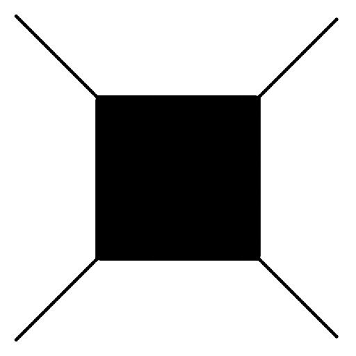
Submitting your work
To submit your work, contact the instructor or a TA. They will walk you through the submission process. Be prepared to show them the work that you have done and answer their questions about it!
Extension 6.2: Persian Recursion (10 points)
- Authors
- The idea for this assignment comes from the article “Persian Recursion” by Anne M. Burns that appeared on pages 196-199 of Mathematics Magazine, volume 7, in 1997
-
A video demonstrating my solution can be found here.
-
That video instructs you how to speed up the drawing substantially.
-
Don't speed things up until you see the rug is drawing properly.
In the extensions folder open the recursivepatterns package and
the PersianRug class.
Your task is to complete the method persianRug so that it draws a rug similar to the
one shown below:
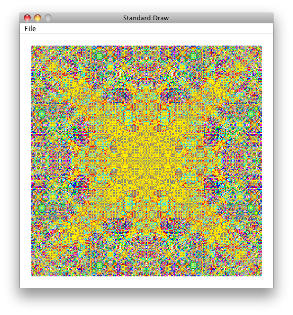
Each call to persianRug works on a given square of the rug. Consider the picture shown below:

-
The square is described by its lower-left corner (in this case, (0,0)), and its size (in this case, 1).
-
Each step of the recursion considers the colors of the provided square's sides (in this case, blue), and computes a color for the two lines to be drawn inside the square (in this case, red).
Computing the color of these two lines is what makes the rug look as it does. More detail is given below concerning how to pick a color.
-
Further recursion would act on the sub-squares you see in the above picture. For example, the upper-left subsquare has its lower-left corner at (0, 0.5), has size 0.5, and has colors blue, red, red, blue, starting from north and proceeding clockwise.
The parameters for persianRug are documented in the source code provided to you for this extension.
Notes:
-
Colors in this lab are represented as an index into a
Colorarray calledpalette. This array is provided for you in the source code and it is passed into yourpersianRugmethod. -
Indexes into
paletteare passed intopersianRugto describe the colors of the square's bordering edges. For example, blue is represented by index 0 into thepalettearray, and cyan appears at index 1. -
Picking a color for the two lines drawn inside a given square is the creative aspect of this assignment. The following should be read carefully and understood before you jump into coding.
-
Although you will eventually pick more diverse colors, we recommend that unti your lab is working, you should always use color index 0 for the color of the two drawn lines.
-
Once that is working, you must pick a color that is a function of the square's bordering colors (which are conveniently represented as indexes into
palette. That function must have the following properties to perform correctly:
-
-
The function must return a value that is an appropriate index into the
palettearray.As you know, 0 is the smallest index, and the largest index is
palette.length-1. -
The function must return the same value for any permutation of a given square's bordering colors. For example, if the colors are specified in order red, blue, blue, red, then any square with two blue and two red sides must compute the same color for the two drawn lines.
Recall that these colors are represented as integers, each being an index into the
palettearray. What kinds of functions on integers return the same result no matter the order of those integers? -
Different functions will produce different rugs. The rug below is computed using the same code as the rug shown at the top of this assignment, but the function was tweaked slightly:
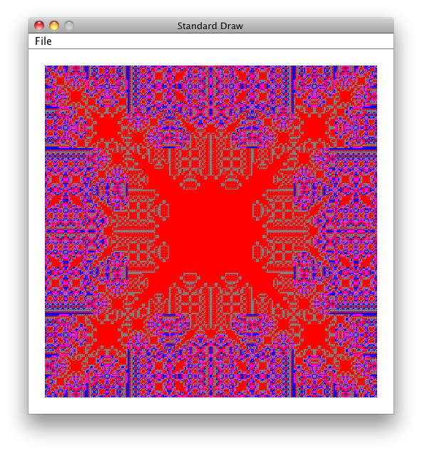 Perhaps you can see that in the above rug, once a square has red on each of its borders, the two drawn lines inside that square are also red. That effect just happens to be a property of the function I used to produce the above image.
-
Rugs contributed Fall 2013:
| 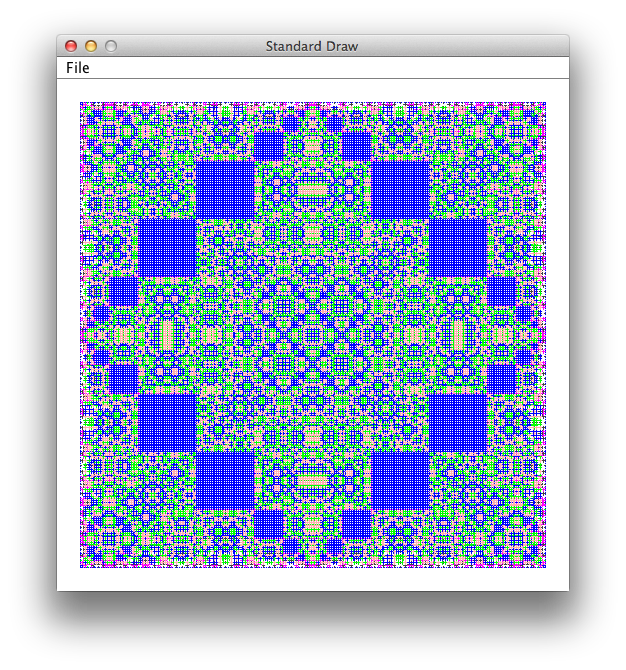 | 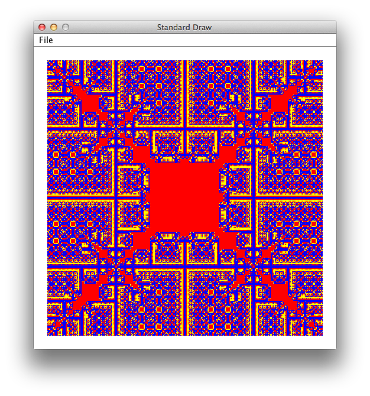 | 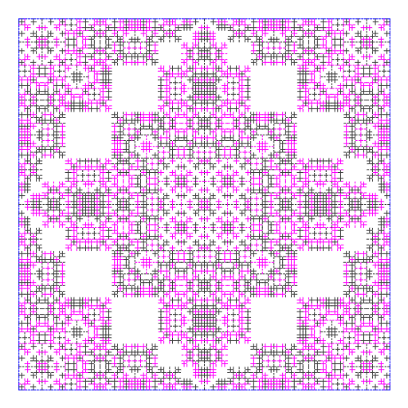 |
| Ben Greene | Dylan Jew and Ari Spilo | Alan Waldman |
| 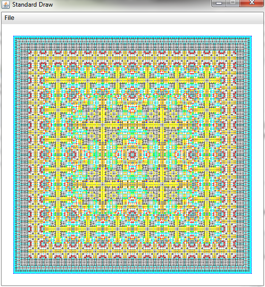 | 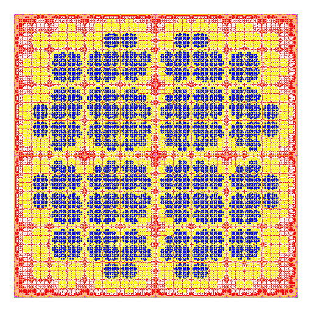 | 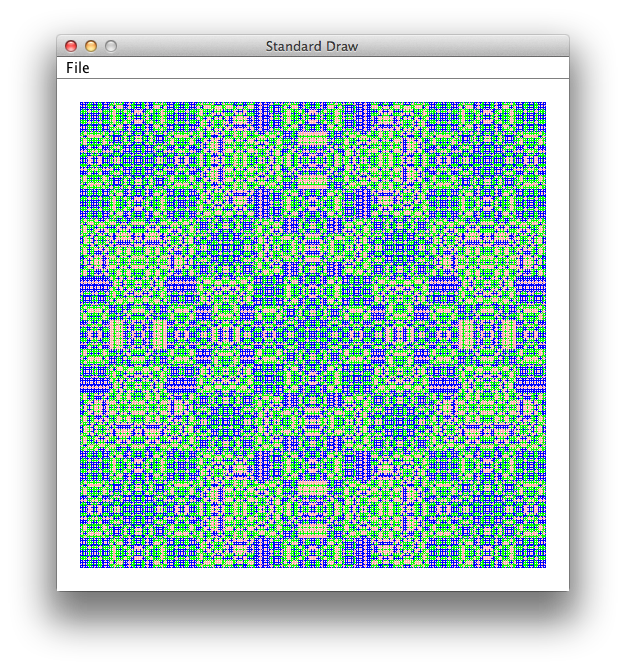 |
| Sam Chase | Meagan Provencher | Ben Zod |
| 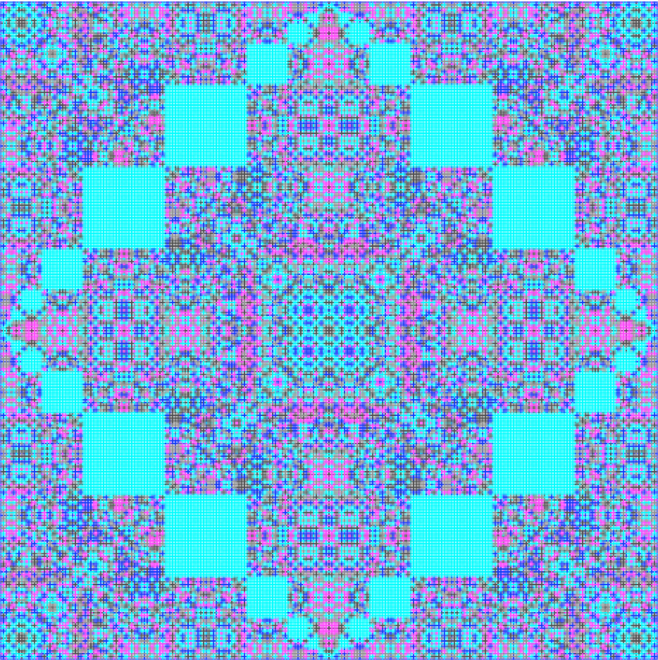 | 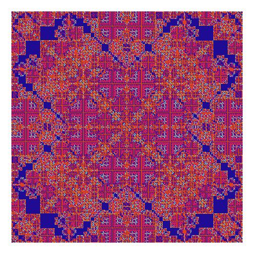 | 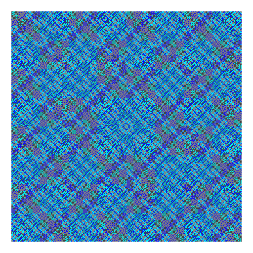 |
| Diana Fasanello | Anna Kolasa and Kunyao Liu | Jeremy Scharf |
Submitting your work
To submit your work, contact the instructor or a TA. They will walk you through the submission process. Be prepared to show them the work that you have done and answer their questions about it!
Extension 6.3: Flower Power (4 points)
- Authors
- Ken Goldman
A video demonstrating my solution can be found here.
In the extensions folder open the recursivepatterns package.
The following classes found there, and described in greater detail below, must
be completed for this extension:
-
TransparentColor -
Flower
The ultimate goal is to complete the flower method of the
Flower class so that it draws an image similar to the one
shown below:
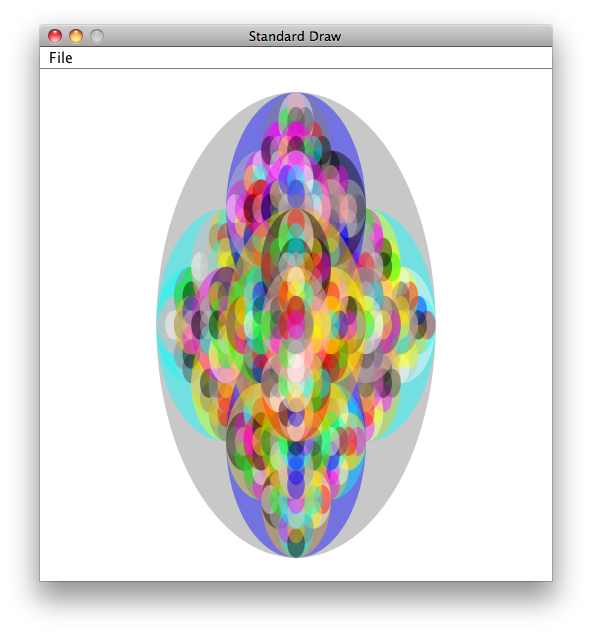
The colors shown in the above image are somewhat transparent, so that the color of an ellipse is allowed to bleed through the ellipse above it.
You can proceed by working on either class first. However, if you postpone
TransparentColor, you will see solid colors in your flower until
you have completed that class.
##Details
TransparentColor-
As is the case with most color models, Java's Color objects are allowed to have a degree of transparency.
The
transparentColormethod, as provided to you, ignores thealphaparameter and returns the color provided as input.You must change this behavior so that the color returned as the same red, green, and blue components as the provided color, but with the specified transparency.
Java makes this easy, because there is a constructor for Color that does the job. This task is given to you primarily to acquaint you with the process of looking through JavaDoc documentation to find a class or method you need.
Follow the instructions provided in the
TransparentColorsource code.Before moving on, test your code by running
TransparentColoras a Java Application. You should see the colors solid at the upper right of the drawing window, and blended (more transparent) at the lower left. Flower-
Your task here is to complete the
flowermethod, whose parameters are described in the JavaDoc for the method. Some useful guildines follow:- The
StdDrawclass offers afilledEllipsemethod, but you must set the color before calling it. -
You should choose a random color for each ellipse you draw, and you are provided a
paletteofColorobjects as input to yourflowermethod.If necessary, review the material in the text and slides that discusses how to pick a random integer. You would use that integer to index the
palettearray. - You must find the substructure in the flower pattern. To help with this, the following diagram shows the locations of each ellipse within a given level of recursion:

-
Analyze the above diagrams to infer the area taken up by each sub-ellipse that you must draw.
-
Remember that the
StdDrawcoordinate system has (0,0) at the lower-left, and (1,1) at the upper right. -
Remember that
StdDrawshapes take a center as their primary coordinate, and use half-widths and half-lengths for dimensions.
- The
As usual, ask for help as needed.
Submitting your work
To submit your work, contact the instructor or a TA. They will walk you through the submission process. Be prepared to show them the work that you have done and answer their questions about it!
Extension 6.4: Fibonacci Recursively and Iteratively (5 points)
- Authors
Introduction
You have written the recursive function for the Fibonacci Sequence in studio. In this extension, you will compare the running time of that recursive formulation with an iterative formulation of the same function.
Procedure
-
Find the
fibonaccipackage in theextensionssource folder. -
Complete the
recursivemethod so that it returns the nth fibonacci number using the recursive proram from studio. -
Complete the
iterativemethod so that it computes the same function, but iteratively.As a hint, you will need two variables that represent the (n-1)th and (n-2)th values of the sequence. Adding those together produces the nth term. The variables' values are then shifted prior to the next iteration.
-
Run the
CorrectnessTestto make sure your functions are computing the correct values. -
We will now compare the timing of the two methods. First run
TimedTest, and give it a little time to finish. Right click theoutputsfolder and click refresh. You should now see two excel file outputs in the folder. Open them up and plot the points, observing the difference in time between the iterative and recursive methods.
Submitting your work
To submit your work, contact the instructor or a TA. They will walk you through the submission process. Be prepared to show them the work that you have done and answer their questions about it!